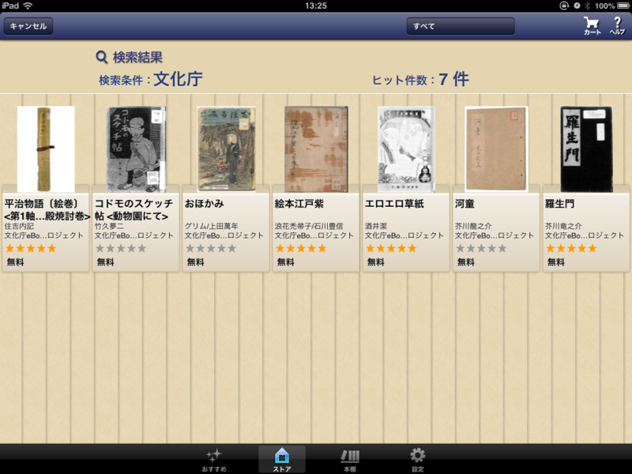

文化庁が「エロエロ草紙」を無償公開したので、Kinoppy で読んでみた。
公開日：

電子書籍の配信実験「文化庁eBooks プロジェクト」は2月1日開始です！国立国会図書館蔵書の蔵書を、Kinoppyを通じて無料で閲覧頂けます（閲覧にはKinoppyへの会員登録を頂く必要があります）。
まずは2月1日に7作品、2月8日に6作品を追加します。配信期間は3月3日（日）まで。貴重な古典籍「平治物語〔絵巻〕」（第一軸：三条殿焼討巻）や芥川龍之介の直筆原稿「河童」（1927/昭和2 直筆原稿）、350 部限定の自費出版の質感を実感できる柳田國男「遠野物語」（1910/明治43 自費出版）など、計13作品を無料公開！
文化庁eBooks プロジェクト 2/1 配信開始！｜紀伊國屋書店の電子書籍(iPhone,iPad,Android,PC,ソニーリーダー™
ちょっとわかりにくいので、“文化庁”でキーワード検索するといい。すると、そのなかに「エロエロ草紙」なるものが含まれているではないか！ 「エロエロ草紙」ってなんや！ なんなんや！
テンションが高まり過ぎて、鼻血頭頂ニ達ス、といった感じだったのだけど、実際に見てみるとそれほどエロくなかった。刊行は昭和5年とのことで、接吻――またの呼び名をキッス――についてあれこれ書いてたり、まぁ、そんな感じ。今日日の中学生の方がもっとドギついの読んでると思う。
この年の11月24日、警視庁がエロ演芸取締規則を各署に通達したと 1930年 - Wikipedia にあるのだけど、この本はどうなったんだろう？ 翌年は満州事変が勃発。どっちにしろ、こんな本を出せる時代じゃなくなっていったんだろうね。
エロエロ草紙は、イロイロ草紙である。
から始まる“自跋*1”もオススメ。昭和初期人が「ウルトラ生活」だの言ってるのはちょっとウケる。
まぁ、そのほかのも結構すごい感じ。「平治物語絵巻」なんか iPad で読める時代になったんだなぁ……
もともと 国立国会図書館デジタル化資料 で公開してあるものを Kinoppy で読めるようにしただけらしい。自分はこのようなものが公開されているだなんてまったく知らなかった。せっかくあるものが知られずホコリをかぶっているだなんて勿体ないので、よい取り組みだと思う。
*1:編著の次第などを巻末に付記する文章。跋語・跋文・後跋・書後・後序・後書などともいう。編著者が自ら執筆した跋を「自跋」といい、編著者以外の友人や弟子などが執筆した跋を「他跋」と呼ぶ。これらも序と同様に執筆者の筆跡を板下としたものが多い……らしい。 http://www.fumikura.net/other/biblio.html